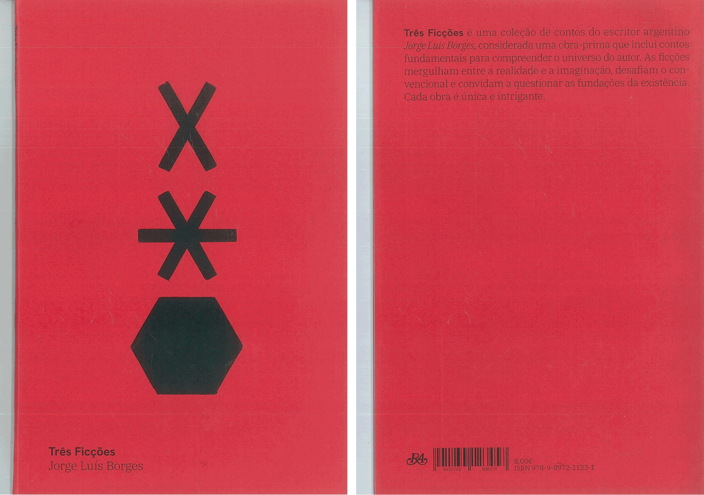

[ Web Design ]
XThis project focused on the complete pagination of Três Ficções, including cover, back cover, spine, half-title, title page, colophon, and index. Key objectives included careful text placement and treatment, defining page size, margins, and text hierarchy to ensure a coherent and readable layout. The project explored typographic choices and structural design to create a balanced and visually engaging reading experience.
